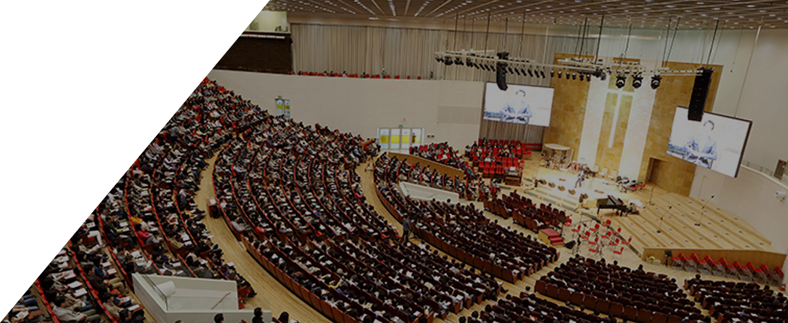

교회생활
우리의 미션
벧엘교회는 복음의 비전이 있는 교회를 지향하며 1년에 봄과 가을에 걸쳐 대부흥전도주일을 진행하고 있습니다.
벧엘교회 성도라면 복음을 전하는 일에 힘써야 하며 기쁨으로 동참합니다.

"전도의 의미"
전도는 욕심으로 되는 것이 아닙니다.사랑과 헌신으로 되지요. 우리가 이렇게 열심을 내는 것은 하나님의 사랑과 은혜가 떠나지 않게 하려는 것입니다.
전도는 욕심으로 되는 것이 아닙니다.사랑과 헌신으로 되지요. 우리가 이렇게 열심을 내는 것은 하나님의 사랑과 은혜가 떠나지 않게 하려는 것입니다.
"선교의 의미"
선교는 모든 민족이 구원을 얻기를 원하시는 하나님의 마음을 알고, 그분의 손과 발이 되어 민족과 열방을 향하여 복음을 전하고 있습니다.
선교는 모든 민족이 구원을 얻기를 원하시는 하나님의 마음을 알고, 그분의 손과 발이 되어 민족과 열방을 향하여 복음을 전하고 있습니다.
교회 봉사 신청/안내
우리교회에서는 성도님들의 달란트를 발휘할 수 있는 다양한 봉사영역이 있습니다.
- 01.교구 봉사
- 02.교회 학교
- 03.남/여선교회
- 04.사역팀
- 05.기타 사역
봉사분야 소개
사역팀
장례, 전도, 상담, 예술음악, 중보(릴레이)기도, 꽃꽃이, 환영사역, 외국인예배, 새가족, 인터넷, 차량(주차), 차량(운전), 영상, 해외선교, 대부흥전도홍보
봉사하기를 원하시는 분은 사무실에서 봉사신청서를 작성하시거나, 홈페이지 신청을 통해 제출하시면 교회봉사에 참여할 수 있도록 안내해드립니다.
봉사지원서 다운
홈페이지 신청
중보 기도
중보기도는 교회와 담임목사님 그리고 성도들을 위해서 기도하는 시간입니다. 매주 목요일 오전 10시30분에 중보기도모임이 있습니다.
전체 중보자 교육
중보기도의 성경적인 근거와 필요성을 교육하여 중보기도 헌신자를 배출합니다.
시간 :
(일산) 1,3,5주 목요일 오전10시30분,
(운정) 1,5주 목요일 오전10시30분
대상 :
모든성도
장소 :
3층 사랑의 교실
문의 :
(일산) 이진희 목사,(운정) 설임수 목사
전체 중보자 기도회
중보기도 헌신자 전체가 함께 모여 기도하는 시간입니다
시간 :
(일산) 1,3,5주 목요일 오전10시30분,
(운정) 1,5주 목요일 오전10시30분
대상 :
중보기도 헌신자
장소 :
(일산)4층 뮤직홀, (운정)3층 사랑의교실
문의 :
(일산)박은수 집사,(운정)한정림 집사
소그룹 중보 기도회
각 팀별로 모임을 갖고 함께 기도합니다.
시간 :
(일산) 1,3,5주 목요일 오전10시30분,
(운정) 1,5주 목요일 오전10시30분
대상 :
각 팀별로
장소와 인도자 보기
교회 예식
Church ceremonies
세례/성찬
세례는 그리스도와 함께 죽고 다시 사는 의식입니다. 성찬식은 예수 그리스도의 죽으심을 기념하고 그리스도를 통해서 보여주신 하나님의 은총을 보증하기 위한 예식입니다.
결혼
결혼예식은 하나님께서 제정하신 것으로 예수 그리스도의 은혜를 입은 성도가 가정을 이루어 하나님께 예배함으로 새 출발을 시작하는 예식입니다.
장례
기독교 장례식을 통해 슬픔을 당한 성도들의 가정을 하나님 안에서 위로하고, 유가족들에게 소망을 주며, 말씀과 찬양을 통해 하나님께 영광을 돌리는 예식입니다.